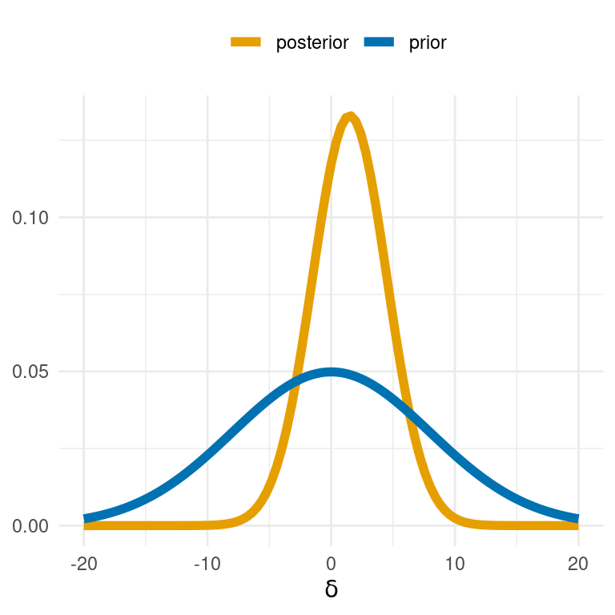
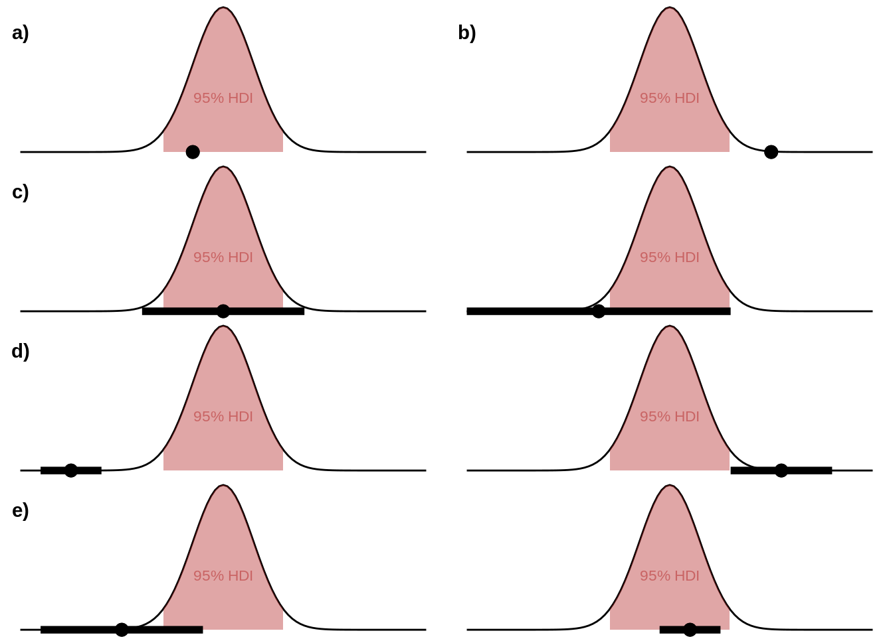
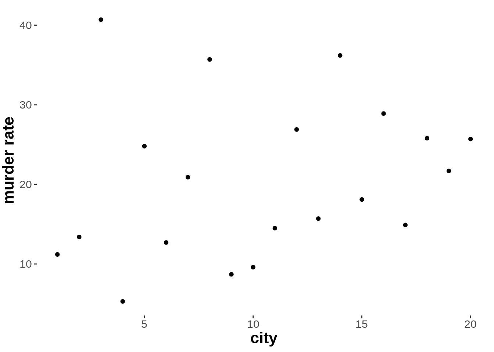
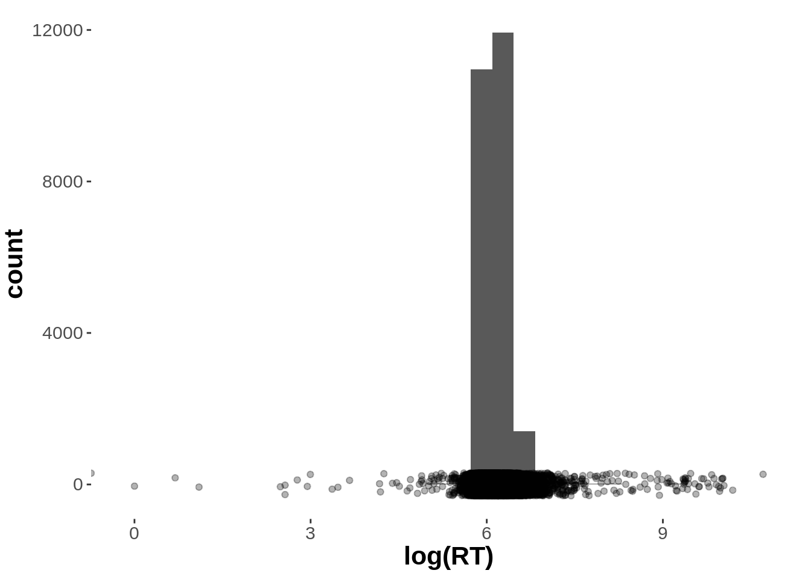
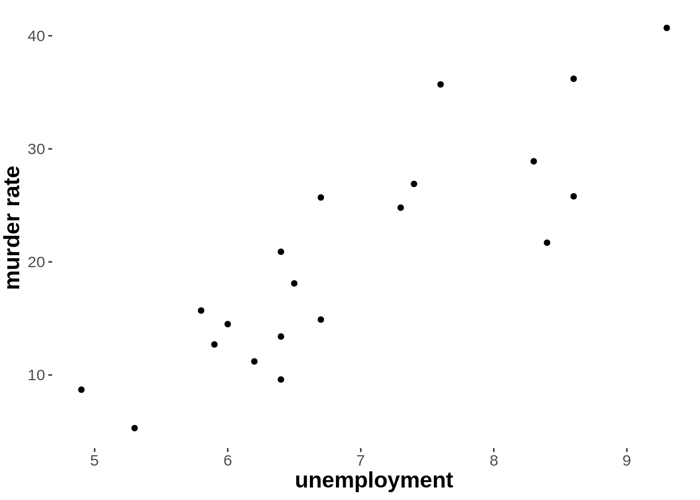

This section introduces ordinary least squares (OLS) linear regression. The main idea is that we look for the best-fitting line in a (multi-dimensional) cloud of points, where “best-fitting” is defined in terms of a geometrical measure of distance (squared prediction error).
12.1.1 Prediction without any further information
We are interested in explaining or predicting the murder rates in a city using the murder data set.
Concretely, we are interested in whether knowing a city’s unemployment rate (stored in variable unemployment) helps make better predictions for that city’s murder rate (stored in variable murder_rate).
Let’s first plot the murder rate for every city (just numbered consecutively in the order of their appearance in the data set):

Suppose we know the vector \(y\) of all observed murder rates but we don’t know which murder rate belongs to which city.
We are given a city to guess its murder rate.
But we cannot tell cities apart.
So we must guess one number as a prediction for any of the cities.
What’s a good guess?
Actually, how good a guess is depends on what we want to do with this guess (the utility function of a decision problem).
For now, let’s just assume that we have a measure of prediction error which we would like to minimize with our guesses.
A common measure of prediction error uses intuitions about geometric distance and is defined in terms of the total sum of squares, where \(y\) is the \(n\)-dimensional vector of observed murder rates and \(\xi \in \mathbb{R}\) is a single numeric prediction:
This measure of prediction error is what underlies the ordinary least squares approach to regression.
It turns out that the best prediction we can make, i.e., the number \(\hat{\xi} = \arg \min_{\xi} \text{TSS}(\xi)\) for which TSS is minimized, is the mean \(\bar{y}\) of the original predictions.
So, given the goal of minimizing TSS, our best guess is the mean of the observed murder rates.
Proposition 12.1 (Mean minimizes total sum of squares.) \[
\arg \min_{\xi} \sum_{i=1}^n (y_i - \xi)^2 = \frac{1}{n} \sum_{i=1}^n y_i = \bar{y}
\]
Proof.
To find a minimum, consider the first derivative of TSS() and find its zero points:
Indeed, the zero point \(\xi = \bar{y}\) is a minimum because its second derivative is positive:
\[
f''(\bar{y}) = 2
\]
The plot below visualizes the prediction we make based on the naive predictor \(\hat{y}\).
The black dots show the data points, the red line shows the prediction we make (the mean murder rate), the small hollow dots show the specific predictions for each observed value and the gray lines show the distance between our prediction and the actual data observation.

To obtain the TSS for the prediction shown in the plot above, we would need to take each gray line, measure its distance, square this number and sum over all lines (cities).
In the case at hand, the prediction error we make by assuming just the mean as predictor is:
At this stage, a question might arise:
Why square the distances to obtain the total sum of, well, squares?
One intuitive motivation is that we want small deviations from our prediction to have less overall impact than huge deviations.
A technical motivation is that the best solution to OLS estimation corresponds to the best solution under a maximum likelihood approach, if we use a normal distribution as likelihood function.
This is what we will cover in Section 12.2 after having introduced the regression model in full.
12.1.2 Prediction with knowledge of unemployment rate
We might not be very content with this prediction error. Suppose we could use some piece of information about the random city whose murder rate we are trying to predict. E.g., we might happen to know the value of the variable unemployment. How could that help us make a better prediction?
There does seem to be some useful information in the unemployment rate, which may lead to better predictions of the murder rate. We see this in a scatter plot:

Let us assume, for the sake of current illustration, that we expect a very particular functional relationship between the variables murder_rate and unemployment. For some reason or other, we hypothesize that even with 0% unemployment, the murder rate would be positive, namely at 4 murders per million inhabitants. We further hypothesize that with each increase of 1% in the unemployment percentage, the murder rate per million increases by 2. The functional relationship between dependent variable \(y\) (= murder rate) and predictor variable \(x\) (= unemployment) can then be expressed as a linear function of the following form, where \(\xi \in \mathbb{R}^n\) is now a vector of \(n\) predictions (one prediction \(\xi_i\) for each data observation \(y_i\)):53
\[
\xi_i = 2x_i + 4
\]
Here is a graphical representation of this particular functional relationship assumed in the equation above. Again, the black dots show the data points, the red line the linear function \(f(x) = 2x +4\), the small hollow dots show the specific predictions for each observed value \(x_i\) and the gray lines show the distance between our prediction \(\xi_i\) and the actual data observation \(y_i\). (Notice that there are data points for which the unemployment rate is the same, but we observed different murder rates.)

We can again quantify our prediction error in terms of a sum of squares like we did before. For the case of a prediction vector \(\xi\), the quantity in question is called the residual sum of squares.
\[
\text{RSS} = \sum_{i=1}^n (y_i - \xi_i)^2
\]
Here is how we can calculate RSS in R for the particular vector \(\xi \in \mathbb{R}^n\) for which \(\xi_{i} = 2x_i + 4\):
Compared to the previous prediction, which was based on the mean \(\bar{y}\) only, this linear function reduces the prediction error (measured here geometrically in terms of a sum of squares).
This alone could be taken as prima facie evidence that knowledge of unemployment helps make better predictions about murder_rate.
Exercise 13.1 [optional]
Compare RSS and TSS. How / where exactly do these notions differ from each other? Think about which information the difference between the two measures conveys.
TSS computes the distance between a data point and the overall mean of all data points, whereas RSS computes the distance between a data point and a predictor value specific to this data point.
The difference between RSS and TSS tells us how good our prediction is in comparison to a naive prediction (using just the mean).
Is it possible for TSS to be smaller than RSS?
That is, could the error based on a single numeric prediction for all data points be smaller than an error obtained for a linear predictor that has a single prediction for each data point?
Yes, that’s possible.
The definition of RSS and TSS does not imply that we look at the optimal point-valued or linear predictor.
It is conceivable to choose a good single number and a very bad linear predictor, so that RSS is smaller than TSS.
12.1.3 Linear regression: general problem formulation
Suppose we have \(k\) predictor variables \(x_1, \dots , x_k\) and a dependent variable \(y\).
We consider the linear relation:
\[ \xi_i({\beta}_0, {\beta}_1, \dots, {\beta}_k) = \beta_0 + \beta_1 x_{1i} + \dots + \beta_k x_{ki} \]
Often we do not explicitly write \(\xi\) as a function of the parameters \(\beta_0, \dots \beta_k\), and write instead:
\[ \xi_i = \beta_0 + \beta_1 x_{1i} + \dots + \beta_k x_{ki} \]
The parameters \(\beta_0, \beta_1, \dots, \beta_k\) are called (regression) coefficients.
In particular, \(\beta_0\) is called the (regression) intercept and \(\beta_1, \dots, \beta_k\) are (regression) slope coefficients.
The term simple linear regression is often used to cover the special case of \(k=1\).
If there is more than one predictor, i.e., \(k \ge 1\), the term multiple linear regression is common.
Based on the predictions of a parameter vector \(\langle {\beta}_0, {\beta}_1, \dots, {\beta}_k\rangle\), we consider the residual sum of squares as a measure of prediction error:
We would like to find the best parameter values (denoted traditionally by a hat on the parameter’s variable: \(\hat{\beta}_i\)) in the sense of minimizing the residual sum of squares:
It is also possible, and often convenient, to state the linear regression model in terms of matrix operations.
Traditionally, we consider a so-called predictor matrix\(X\) of size \(n \times (k+1)\)), where \(n\) is the number of observations in the data set and \(k\) is the number of predictor variables.
The predictor matrix includes the values for all predictor variables and it also includes an “intercept column” \((X^{T})_0\) for which \(X_{i0}=1\) for all \(1 \le i \le n\) so that the intercept \(\beta_0\) can be treated on a par with the other regression coefficients.54
Using the predictor matrix \(X\), the linear predictor vector \(\xi\) is:
\[\xi = X \beta\]
Exercise 13.2
How can we interpret the parameters \(a\) and \(b\) of the linear model \(\xi_i = a x_i + b\)?
How are these parameters usually called in regression jargon?
Parameter \(a\) is the slope, \(b\) the intercept of a simple linear regression.
Parameter \(a\) gives the amount of change of \(y\) for each unit change in \(x\).
Parameter \(b\) gives the the prediction xi for \(x=0\).
12.1.4 Finding the OLS-solution
In the above example, where we regressed murder_rate against unemployment, the model has two regression coefficients: an intercept term and a slope for unemployment.
The optimal solution for these delivers the regression line in the graph below.

The total sum of squares for the best fitting parameters is:
## [1] 467.6023
This is the best prediction we can make based on a linear predictor.
In the following, we discuss several methods of finding the best-fitting values for regression coefficients that minimize the residual sum of squares.
12.1.4.1 Finding optimal parameters with optim
We can use the optim function to find the best-fitting parameter values for our simple linear regression example.
## Best fitting parameter values:
## Intercept: -28.53
## Slope: 7.08
## RSS for best fit: 467.6
12.1.4.2 Fitting OLS regression lines with lm
R also has a built-in function lm which fits linear regression models via RSS minimization. Here is how you call this function for the running example:
The output of the fitted object shows the best-fitting values (compare them to what we obtained before).55
12.1.4.3 Finding optimal parameter values with math
It is also possible to determine the OLS-fits by a mathematical derivation. We start with the case of a simple linear regression with just one predictor variable.
Theorem 12.1 (OLS solution for simple linear regression) For a simple linear regression model with just one predictor for a data set with \(n\) observations, the solution for:
Let \(Q\) denote the RSS function. We want to find the minima of \(Q\).
So, we want to find the values \(\hat\beta_0\) and \(\hat\beta_1\) for which \(\frac{\partial Q}{\partial \hat\beta_0}=0\) and \(\frac{\partial Q}{\partial \hat\beta_1}=0\), since all partial derivatives equal to 0 at the global minimum.
## # A tibble: 1 x 2
## beta_1 beta_0
## <dbl> <dbl>
## 1 7.08 -28.5
A similar result also exists for regression with more than one predictor variable, so-called multiple linear regression.
Theorem 12.2 (OLS general) Let \(X\) be the \(n \times (k+1)\) regression matrix for a linear regression model with \(k\) predictor variables for a data set \(y\) with \(n\) observations. The solution for OLS regression
The OLS estimator is obtained (like in the special case of simple linear regression) by minimizing the residual sum of squares (RSS).
The RSS for the multiple linear regression model is
The estimator \(\hat\beta\) can be obtained by rearranging again:
\[
\hat{\beta} = (X^T \ X)^{-1}\ X^Ty
\]
Finally, to see that \(\hat\beta\) is indeed a global minimizer of the OLS criterion, we check that the second order condition is always a semidefinite positive matrix (details omitted here):
The availability of these elegant mathematical solutions for OLS-regression explains why the computation of best-fitting regression coefficients with a built-in function like lm is lightning fast: it does not rely on optimization with optim, sampling methods or other similar computational approaches. Instead, it instantaneously calculates the analytical solution.
References
Olive, David J. 2017. Linear Regression. Springer International Publishing.
The predictor vector for linear regression is often written as \(\hat{y}\). The notation in terms of a linear predictor \(\xi\) is useful for later extensions to generalized linear regression models.↩
You can conveniently think of the predictor matrix as just the data you want to analyze in a tidy tibble format, with the columns giving the variables of interest, only that you have removed the column with the dependent variable \(y\) and that you have instead added the “intercept column” containing the entry 1 in each row.↩
The fitted object fit_lm also contains additional information, to be inspected with summary(fit_lm). We skip these details here because the current focus is on applied Bayesian analyses.↩